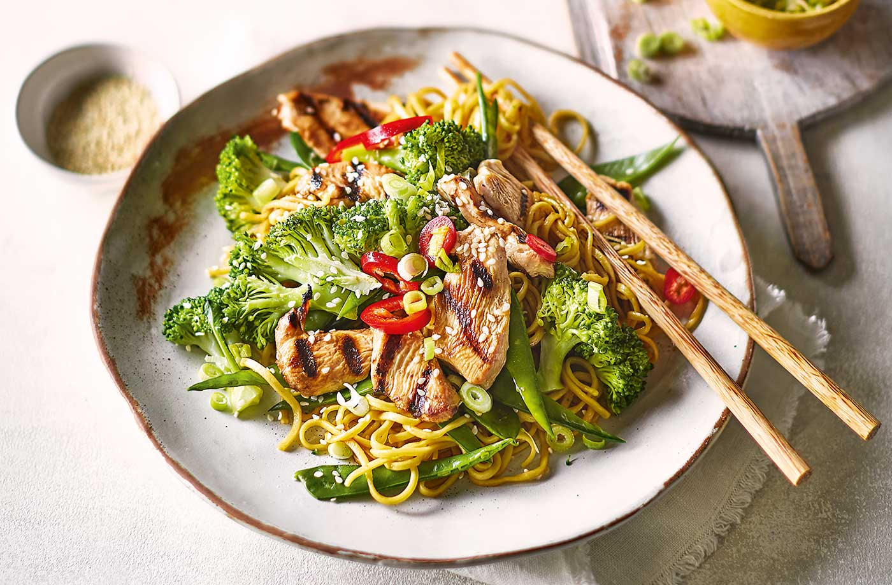

Chicken Teriyaki and Noodles

Description
Inspired by Japanese cooking, these sweet and tangy teriyaki noodles are a
simple and satisfying midweek meal. Bursting with fiery flavours, crunchy
veg, nutty sesame seeds and griddled chicken, this easy dairy-free dinner
is ready in under 30 minutes.
Ingredients
- 650g pack chicken breast portions, sliced into thin strips
- 3½ tbsp teriyaki sauce
- 250g pack dried medium egg noodles
- 1 tsp sesame oil, plus extra for drizzling (optional)
- 1 tbsp reduced-salt soy sauce
- 1 head of broccoli, broken into small florets
- 85g mangetout, halved diagonally
- 1 large red chilli, finely sliced
- 3 spring onions, finely sliced
- 1 tsp sesame seeds
Steps
-
In a bowl, mix the chicken with the teriyaki sauce. Set aside in the
fridge to marinate for 15 mins.
-
Meanwhile, cook the noodles to pack instructions. Drain well, then toss
with the sesame oil and soy sauce.
-
Bring a large pan of water to the boil and add the broccoli. Cook for 5
mins, adding the mangetout for the final 3 mins. Drain and set aside.
-
Heat a large griddle pan over a high heat until hot and almost smoking.
Working in batches, griddle the chicken, pouring over any marinade left
in the bowl, for 1-2 mins each side until fully cooked through.
-
To serve, divide the noodles between plates and top with the veg and
griddled chicken. Garnish with the chilli, spring onions and sesame
seeds, and drizzle with a little extra sesame oil, if you like.
Tip: The chicken can be marinated in a non-metal
container in the fridge up to 24 hrs in advance.